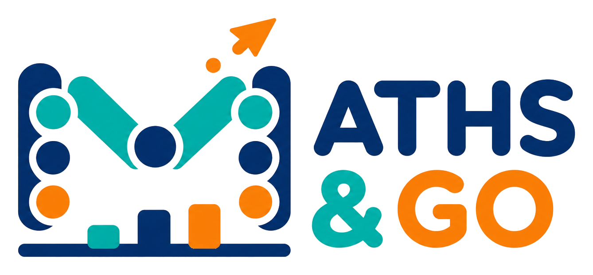
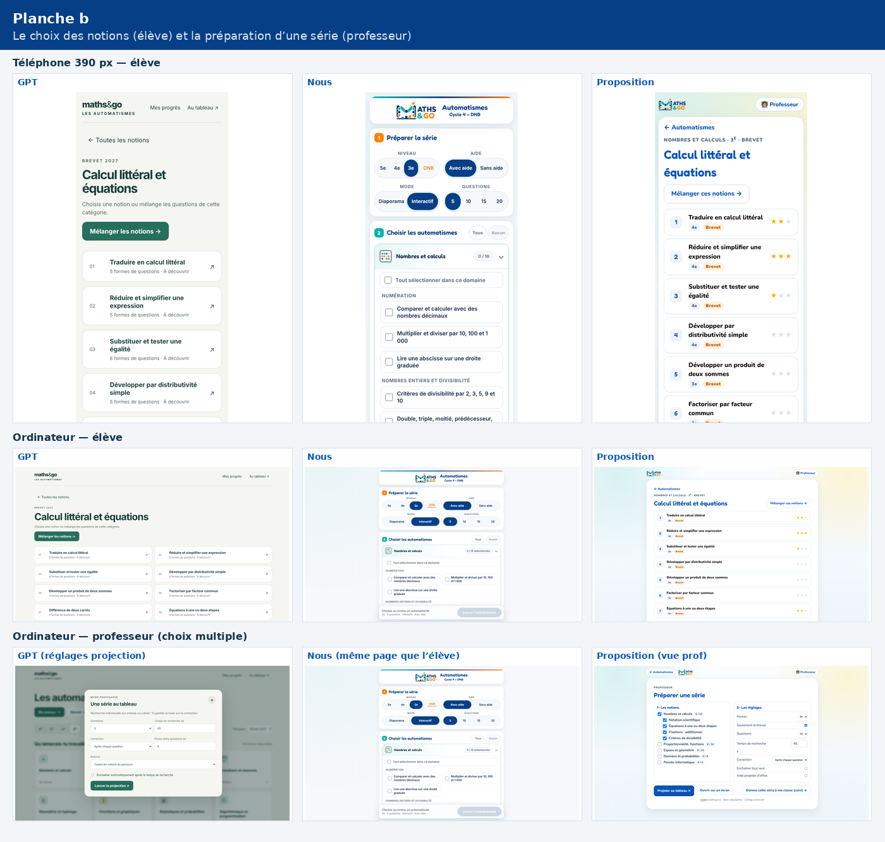
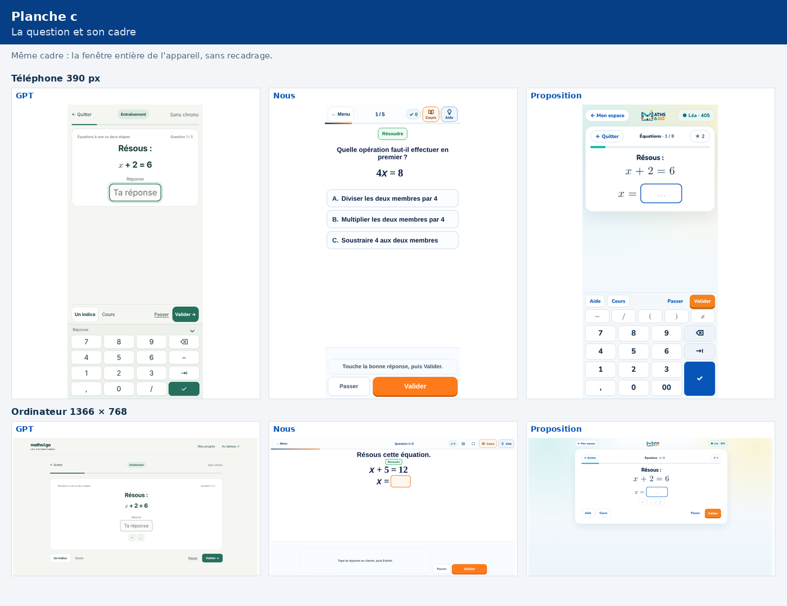
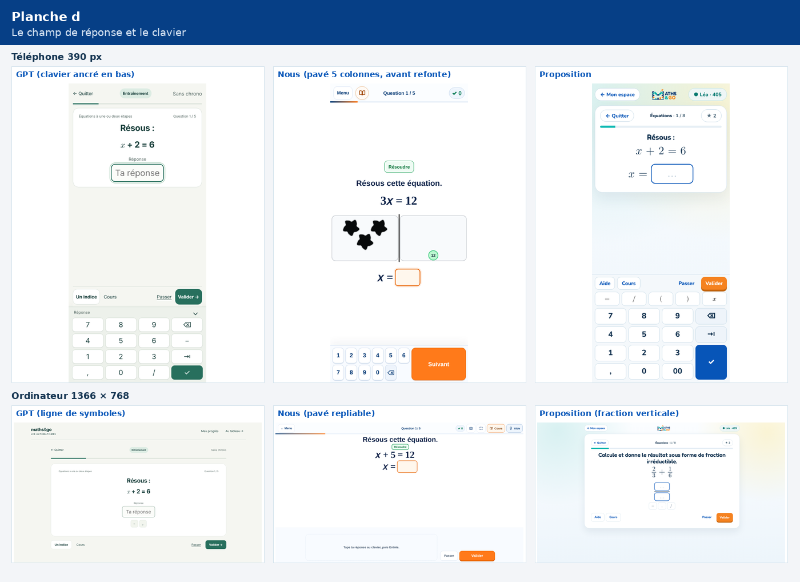
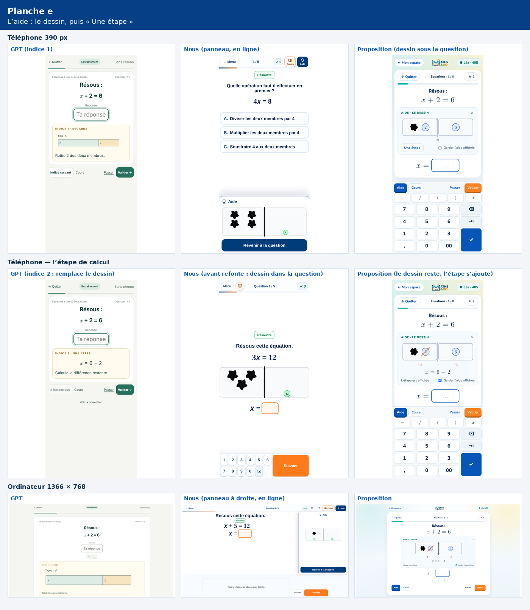
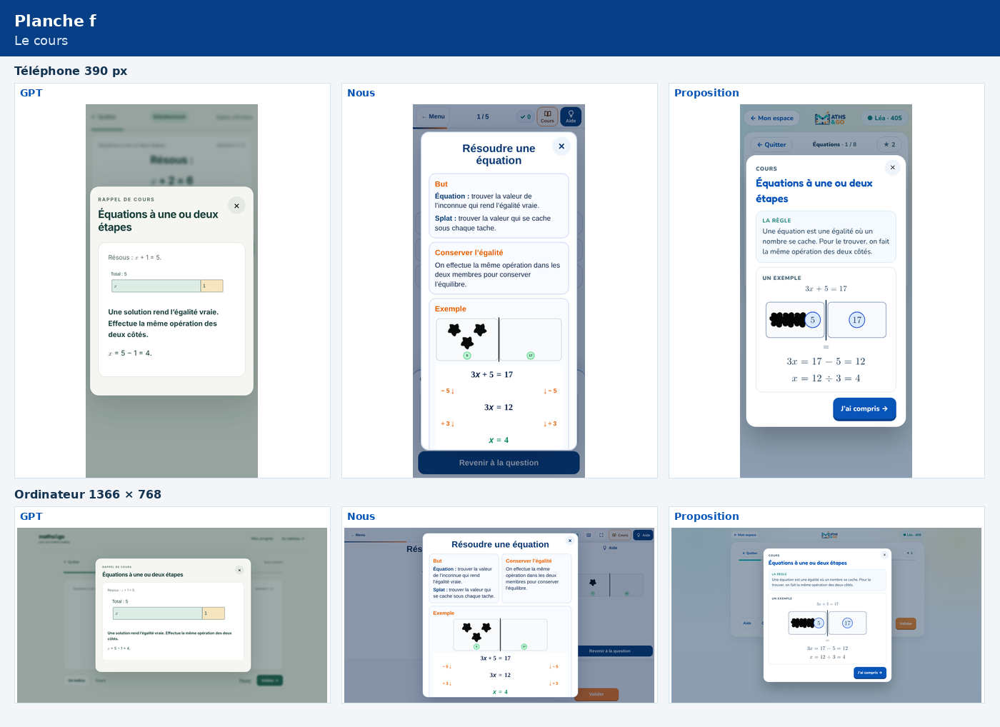
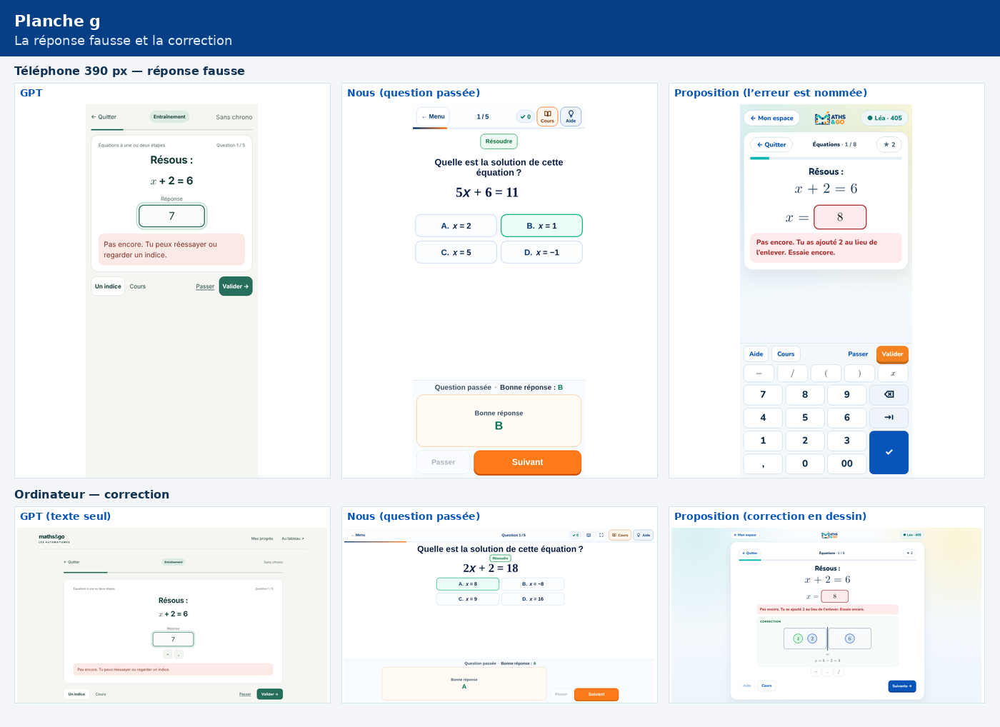
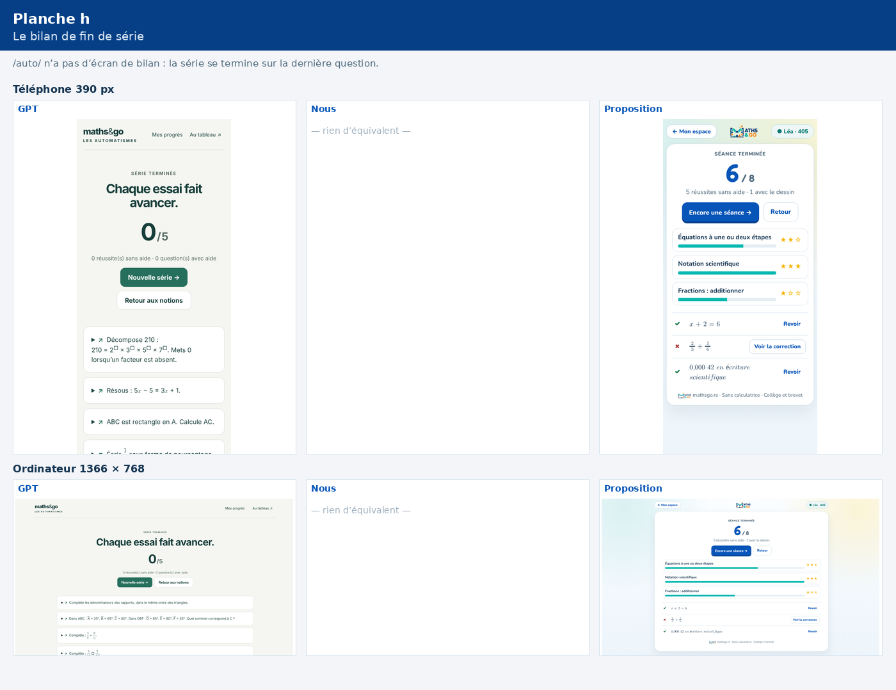
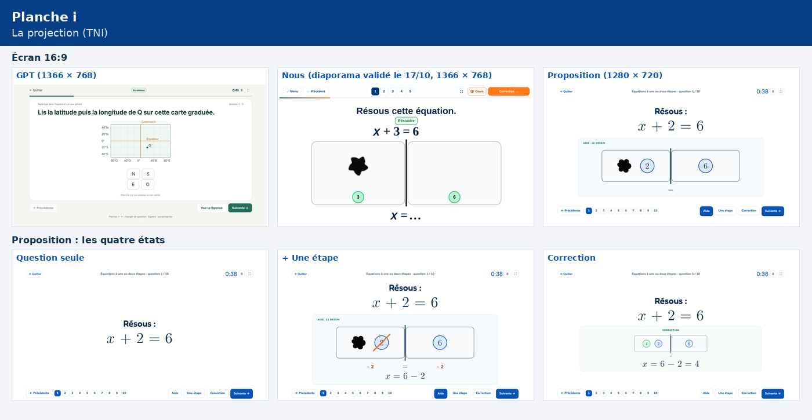
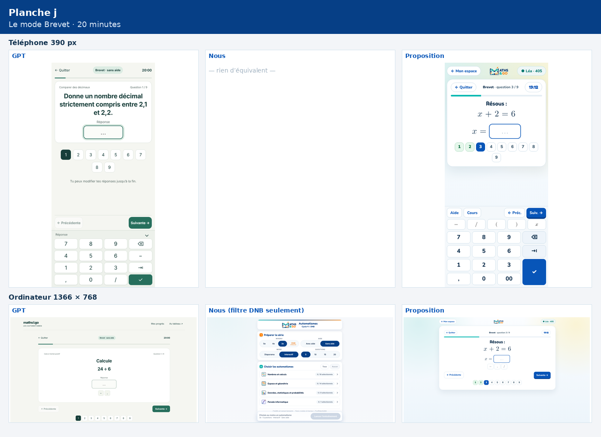

Lot 1 — la nouvelle appli /automatismes/ : ce qui est décidé avant d’écrire une ligne de code.

NC27, forme NC27-a (une lettre, partout), question NC27-a@graine. Noms en français. Cinq domaines du nouveau programme ; la grille du brevet dans la carte.famille, forme, graine, juste, aide et refuse tout le reste.planches-lot1\ ; la maquette cliquable dans maquette-lot1\.codex\PROMPTS\PROMPT-CODEX-lot2-moule.md.Lecture complète dans plan\LECTURE-rapports-C1-Codex.md. Les captures sont bien là : codex\RAPPORTS\captures\ (1 988 PNG avant/après, 14 planches, 10 aperçus V2, manifest.json). Ce qui change le contrat :
| Rapport | Ce qu’on retient | Conséquence |
|---|---|---|
| 42 ↔ 84 | 506 types V1 contre 435 formes GPT : 319 identiques, 163 partiels, 24 absents. Ce qui disparaît chez GPT : les manipulations (jetons, produits partiels, étiquettes de Pythagore) et les tâches de contrôle (vérifier l’hypoténuse, partie ≤ tout, moyenne entre min et max). Trois numérotations de formes coexistent chez GPT. | Une lettre par forme, partout. Un champ « type de tâche » dans la carte. Deux conventions à écrire dans les cahiers : π exact, médiane d’un effectif pair = moyenne des deux centrales (notre règle). |
| Banque d’aides | 18 types retirés avec leur dessin ; glisse-nombre de la notation scientifique remplacé ; tableau d’effectifs de dnb_28 perdu ; aides rétrécies de 1 000 px à 300 px une fois en panneau ; 173 types non tranchés à l’œil. Codex n’a pas vérifié si une aide donne la réponse. | L’aide de référence est celle d’avant (commit 8dc3f27b, captures *-avant-*). Plus jamais de panneau latéral. Chaque cahier vérifie « la réponse n’y est jamais écrite ». |
| Brevet 136 / 153 | Aucune de nos 136 questions ne manque ; GPT ajoute 18 questions de septembre 2026. 28 reprises partielles (produire → choisir ; écrire le calcul → donner le résultat ; support disparu). Poids : DP04, PF04, NC16, DP06, NC27 en tête. | Plusieurs codes de grille par famille. Les cahiers des familles « partielles » rétablissent la tâche d’origine. Ordre des lots de contenu inchangé (Nombres et calculs d’abord). |
/automatismes/NC27). Une forme s’écrit NC27-a, NC27-b… (lettre minuscule, dans l’ordre du cahier). Une question s’écrit NC27-a@2047483 (la graine après @). Les anciens identifiants de GPT (NC27-V1, PF04-A, forme=0) sont gardés dans un tableau d’alias pour relire son cahier et ses correspondances ; ils n’apparaissent nulle part ailleurs. Adresse d’une question : /automatismes/?notion=NC27&forme=a&graine=2047483 — même question partout, pour un élève, un prof au tableau ou un test.
Le menu suit le nouveau programme. Les huit catégories de GPT s’y rangent ainsi (les grandeurs d’après ta formation, diapo 17) :
| Domaine (menu) | Sous-domaines (classement secondaire) | Familles GPT | Familles |
|---|---|---|---|
| Nombres et calculs | Nombres · Fractions · Puissances · Calcul littéral et équations · Durées et masses | NC01–NC31, GM01, GM03, GM04 | 34 |
| Proportionnalité, fonctions | Proportionnalité et pourcentages · Vitesse et grandeurs quotients · Fonctions et graphiques | PF01–PF11 (dont PF08 vitesse) | 11 |
| Espace et géométrie | Repérage · Figures et angles · Théorèmes · Transformations · Solides · Aires, volumes et leurs unités | EG01–EG26, GM02 | 27 |
| Données et probabilités | Statistiques · Probabilités | DP01–DP08 | 8 |
| Pensée informatique | Programmes de calcul · Variables, boucles · Tableur | PI01–PI04 | 4 |
Un seul fichier par famille, catalogue/NC27.json, écrit depuis le cahier (le cahier est la source, le JSON en est la copie exacte). Le catalogue complet est assemblé par un script.
| Champ | Contenu | Exemple (NC27) |
|---|---|---|
id | identifiant stable | NC27 |
nom | nom français, relu (jamais « dernier chiffre ») | Équations à une ou deux étapes |
domaine, sousDomaine | un des cinq domaines ; le sous-domaine pour le classement | nombres-calculs · Calcul littéral et équations |
niveaux | première classe où la famille s’ouvre, puis entretien | ["5e","4e","3e"] |
brevet | codes de notre grille (plusieurs possibles) + questions reliées (ZB 7 / Z26B Q7…) + forme exacte + différence notée par Codex | dnb_13 · ZB 7, ZPB 9, ME 5, AN 4, ME-pro 8, R1 5 |
v1 | types de /auto/ repris, avec la nature (même / partiel) — pour retrouver l’aide d’avant | dnb_13 t1–t12 |
cours | règle courte, exemple différent de la question, dessin de l’exemple | §6 |
formes[] | une par lettre : objectif, niveau, brevet oui/non, une seule forme de réponse (nombre, fraction, expression, ensemble, QCM, texte court, manipulation), profil des nombres, contrat de réponse (π exact, irréductible exigée ou non, tolérance), type de tâche (calculer, reconnaître, choisir une méthode, contrôler, manipuler), aide (type et paramètres), étape, correction, erreurs connues (codes), contrôles | NC27-a : « Inverser une addition » |
origine, valide | d’où vient la forme (V1, GPT, nouvelle) ; validée par Gwenaël oui/non ; cachée tant que non | GPT + V1 · non |
Trois types d’aide, à choisir forme par forme dans le cahier : dessin sous la question (bandes, balance, droite graduée, barres…) ; annotation sur l’énoncé (notation scientifique : le 1 entouré, « 1 000 = 1 × … » écrit dessous — ton idée du 21/10) ; manipulation (jetons, étiquettes de Pythagore, plateau ÉquaSplat). Les trois obéissent à la même règle : on peut compter sur le dessin, la réponse n’y est jamais écrite.
Un code = une erreur connue + la phrase que l’élève lit (tutoiement, une ligne). Une forme déclare les codes qu’elle sait reconnaître ; le correcteur rend le code, jamais un texte libre. Table de départ (elle grandit avec les cahiers) :
| Code | Erreur | Phrase lue par l’élève |
|---|---|---|
E-SENS | opération inverse appliquée dans le mauvais sens | Tu as ajouté au lieu d’enlever (ou l’inverse). |
E-UN-SEUL-MEMBRE | opération faite d’un seul côté | Ce que tu enlèves d’un côté, enlève-le aussi de l’autre. |
E-SIGNE | signe oublié ou inversé | Regarde le signe. |
E-VIRGULE | virgule mal placée, zéros ajoutés | La virgule a bougé d’un rang de trop (ou de trop peu). |
E-UNITE | mauvaise unité ou conversion | Vérifie l’unité demandée. |
E-NON-REDUIT | expression juste mais non réduite | C’est juste, mais pas réduit : regroupe. |
E-NON-IRREDUCTIBLE | fraction juste mais réductible | C’est égal, mais on peut encore simplifier. |
E-INVERSE | fraction ou rapport inversé | Tu as inversé le haut et le bas. |
E-FORME | réponse mal écrite (syntaxe) | Je ne lis pas cette écriture : vérifie. |
E-ARRONDI | valeur approchée là où l’exact est demandé | Donne la valeur exacte (avec π, ou en fraction). |
E-ORDRE | priorités opératoires | Les multiplications d’abord. |
E-AUTRE | faux, erreur non reconnue | Pas encore. Regarde le dessin, puis essaie encore. |
Entier de 1 à 2 147 483 647, tiré par l’appli en entraînement, distribué par le serveur en séance programmée ou en direct. Le générateur de GPT (rng(seed)) est conservé tel quel : même graine, même question, aujourd’hui et dans un an. La version du moteur accompagne toujours la graine dans un événement (une graine ne vaut que pour une version).
automatismes/
index.html l’élève (et le prof avec ?prof=1, comme l’univers SPLAT!)
app.js l’interface (réécrite au lot 2 d’après ce contrat)
core.js tirage par graine, correcteur sans eval, fractions exactes (GPT, inchangé)
math-format.js écriture des maths (fractions verticales, vrai moins, variables MG Math)
math-layout.js ajustement des expressions à la largeur (GPT)
style.css la charte (§4)
catalogue/ NC27.json… (une carte par famille) + catalogue.json assemblé + alias-gpt.json
generateurs/ nombres.js, algebre.js, geometrie.js, mesures.js, donnees_algo.js, proportion_fonctions.js (GPT, mis en forme)
aides/ nos dessins : balance-splats.js, bandes-fractions.js, droite-graduee.js, numeration.js, barres.js…
(ils consomment packages/charte et packages/objets, jamais une couleur inventée)
cours/ un dessin d’exemple par famille (SVG)
fonts/ mg-math.woff + licence GUST (la variable x arrondie, distincte de ×)
suivi.js le contrat d’événements (§5) ; adaptateur serveur ajouté au lot « suivi »
tests/automatismes-*.test.mjs les tests (87 000 tirages, correcteur, cartes d’identité, aides)
_sources/automatismes/cahiers/ les cahiers de domaine (PDF + source)
Contrôles automatiques à chaque lot : identifiants uniques et bien formés ; un nom français par famille ; une seule forme de réponse par forme ; niveaux valides ; la bonne réponse est acceptée pour 200 graines par forme ; aucune aide ne contient la réponse (le SVG de l’aide ne contient pas la chaîne de la réponse) ; aucun « dernier chiffre » dans les textes ; cache-buster bumpé pour chaque script modifié (règle du dépôt).
Chaque planche met côte à côte, dans le même cadre (fenêtre entière de l’appareil) : l’appli de GPT, la nôtre (/auto/ en ligne, ou d’avant la refonte quand c’est elle qui compte), et la proposition (maquette maquette-lot1\index.html?ecran=…). Téléphone 390 × 844, ordinateur 1366 × 768, TNI 1280 × 720.

?prof=1), le choix multiple de GPT et le nôtre réunis : domaines et notions à cocher, niveau, Brevet seul, nombre de questions, temps de recherche, correction après chaque question ou à la fin, enchaînement automatique, aide projetée d’office ; puis « Projeter », « Ouvrir sur un écran » (lien à donner), ou « Donner cette série à ma classe » (suivi, §5). 
ajusterEchelle), l’énoncé en Fredoka en haut, l’expression mathématique grande (MG Math), le champ juste sous l’énoncé, la barre de progression discrète. En haut du cadre : « ← Quitter », « Équations · 1 / 8 », les étoiles de la notion. En bas du cadre : Aide · Cours à gauche, Passer · Valider à droite. Rien n’est coupé au téléphone : la question tient au-dessus du clavier.






Tout vient de packages/charte/src/charte.js et de Défi tables (le modèle commun des applis suivies). Aucune couleur inventée : les dessins consomment la charte.
| Rôle | Valeur | Source |
|---|---|---|
| Bleu identité, boutons de navigation, titres | #063f86 (boutons Défi tables : #0755b8, ombre #043f8c) | charte · Défi tables |
| Turquoise (progression, repère de suivi) | #08b9b2 | charte |
| Orange (Valider, l’action de réponse) | #f58220 | charte · /auto/ (les élèves le connaissent) |
| Encre, texte atténué, filets, fond doux | #143451 · #506b7d · #d4e3ed · #f5f9fc | Défi tables |
| Réussite / erreur | #147447 sur #e5f7eb · #a93030 sur #ffebeb | Défi tables |
| Fond de page | dégradé Défi tables (turquoise et jaune très pâles sur #edf5fb) ; blanc pur en projection | Défi tables |
| Schémas en barres, balance, ÉquaSplat | COULEURS_BARRES : inconnue #dbeafe/#1d4ed8, résultat #dcfce7, suppression hachurée #f97316, splat #050505 | charte |
| Bandes de fractions, pourcentages, numération, Pythagore | COULEURS_BANDES_FRACTIONS, COULEURS_POURCENTAGES, COULEURS_NUMERATION_DECIMALE, COULEURS_PYTHAGORE | charte (tes outils) |
| Titres et nombres manipulés | Fredoka 600 | charte |
| Texte | Nunito / Segoe UI (polices du site, locales) | site |
| Mathématiques | MG Math (GPT, licence GUST, locale) pour les variables ; chiffres et opérateurs droits ; vrai signe moins ; virgule décimale ; fractions verticales | GPT + charte |
| Rayons, espacements | cadre 28 px, boutons 13 px, champs 12 px ; grille de 4 px | charte |
| Boutons | primaire bleu à ombre portée (Défi tables), secondaire blanc bord bleu, « Valider » orange, hauteur 48 px (36 px en petit) | Défi tables |
Lisibilité au TNI : contraste ≥ 4,5 pour tout texte (la fonction contraste() de la charte est testée sur chaque couleur de texte de style.css). Rien de turquoise ou d’orange clair comme texte.
mg-automatismes), même algorithme. Avec code : l’état des boîtes et les essais sont sur le serveur ; l’appareil n’est qu’un écran (deux élèves sur une tablette ne se passent rien — modèle commun). Une notion fermée par le prof n’entre jamais dans une séance.Repris du contrat de GPT (INTEGRATION_SERVEUR.txt) et réduit au modèle commun des applis suivies. L’appli émet un événement local mathsgo:automatismes à chaque réponse validée ; l’adaptateur serveur (lot « suivi ») l’envoie si l’élève est connecté par code.
{ "famille": "NC27", "forme": "a", "graine": 2047483, "juste": 1, "aide": 2, "moteur": "1.0.0" }
aide : 0 = sans aide · 1 = le dessin ouvert · 2 = l’étape vue · 3 = correction ou cours vus avant de répondre
Le serveur ajoute lui-même le code de l’élève (session), la date et la séance ; il refuse (400) : une famille absente de la liste des 84 ids connus côté serveur, une forme hors [a-z], une graine hors 1…2147483647, un juste ou aide hors de leurs valeurs, tout champ en plus, tout texte libre. Pas de durée, pas de réponse brute (RGPD minimal : rien qui ne serve au parcours). Les 10 000 derniers événements restent aussi en local pour « Mes progrès » sans code.
eval (vérifié dans core.js), tout ce qui est affiché passe par esc() ou mathHtml() à partir du catalogue seulement — le lot 2 vérifie qu’aucune valeur saisie n’est réinjectée dans le HTML. La page cachée n’est pas secrète, elle est seulement non listée : elle ne contient rien de sensible.Le cahier d’un domaine = une fiche par forme, au format du cahier de GPT (314 pages, une fiche par forme), avec nos règles et, pour chaque aide, les trois versions côte à côte (la nôtre d’avant la refonte, la refonte, GPT) en captures, et une case « choix de Gwenaël ». Le cahier est la seule source pour coder le domaine. Voici la fiche de la première forme de NC27, remplie comme elle sera dans le cahier « Nombres et calculs » :
| NC27-a | Inverser une addition — Équations à une ou deux étapes |
|---|---|
| Niveau · brevet | 5e introduction, 4e–3e automatisme · Brevet : oui (dnb_13 ; ZB 7, R1 5) |
| Origine | GPT NC27-V1 ; V1 dnb_13 t1, t2 (même savoir-faire). Type de tâche : calculer. |
| Énoncé | « Résous : x + 2 = 6 » (GPT écrit « Résous : x + 7 = 12. » — on garde, sans point final après une expression). |
| Données | b, c entiers de 1 à 20 ; c ≥ b en 5e ; solution négative autorisée à partir de la 4e ; jamais b = 0 ; jamais 69 en exemple mis en avant. |
| Forme de réponse | nombre (une seule forme) ; « x = » écrit devant le champ ; signe moins et virgule sur le clavier. |
| Réponses acceptées | 4 ; 4,0 ; 8/2 (toute fraction égale) ; « x = 4 » si tapé au clavier physique. Refusées : 8 (E-SENS), −4 (E-SIGNE), 2 (E-AUTRE). |
| Aide (le dessin) | Choix de Gwenaël (21/10) : la balance à deux plateaux de notre V1 d’avant — à gauche un splat et un jeton « 2 », à droite un jeton « 6 », le fléau entre ; la réponse n’est écrite nulle part. Écartés : la barre unique de GPT (total 6, x | 2) ; le panneau de la refonte (même balance, rétrécie à 300 px). |
| Une étape | Le jeton « 2 » barré en orange à gauche, « − 2 » écrit sous chaque plateau, et la ligne x = 6 − 2 (on n’écrit pas 4). Option de manipulation à discuter : plateau ÉquaSplat. |
| Correction | La balance avec le splat révélé « 4 » en vert ; ligne : x = 6 − 2 = 4. Vérification facultative : 4 + 2 = 6. |
| Cours (famille) | Règle : « Une équation est une égalité où un nombre se cache. Pour le trouver, on fait la même opération des deux côtés. » Exemple différent : 3x + 5 = 17, balance à trois splats et un jeton 5 contre 17 ; 3x = 17 − 5 = 12 ; x = 12 ÷ 3 = 4. |
| Erreurs connues | E-SENS (c + b), E-SIGNE (−(c − b)), E-UN-SEUL-MEMBRE (réponse = c). |
| Contrôles | 200 graines : la bonne réponse est acceptée ; 19 et −5 refusés pour x + 7 = 12 ; x + 7 = 7 donne 0 ; le SVG de l’aide ne contient jamais la valeur de la solution ; l’étape ne contient jamais le résultat. |
| Ce qu’on garde / corrige de la fiche GPT | Gardé : données, acceptation, contrôles, règle du cours. Corrigé : le dessin (barre → balance), l’étape (GPT : « x + 7 − 7 = 12 − 7 » sans calcul — on garde l’idée, on l’écrit sur le dessin), les phrases d’erreur (codes), l’exemple du cours avec un dessin. |
Les quatre autres formes de NC27 (b : inverser une multiplication, solution fractionnaire ; c : résultat nul ; d : deux étapes ax + b = c ; e : quotient x/a = c) suivront le même gabarit dans le cahier « Nombres et calculs », lot 3.
À coller tel quel à Codex (fichier codex\PROMPTS\PROMPT-CODEX-lot2-moule.md). Fable vérifie ; Opus applique les retouches et ouvre la PR ; Gwenaël fusionne.
# Lot 2 — le moule de la nouvelle appli Automatismes (pour Codex)
Dépôt : `bourgault314/maths`. Branche de travail à créer depuis `main` : `automatismes-moule`. Rien n'est poussé sur `main` ; tu ouvres une PR vers `main`, Gwenaël fusionne après vérification par Fable.
Tu es l'auteur de l'appli archivée dans `archive/automatismes-sites-2026-10-20` (commit `8feecca6`, dossier `archives/automatismes-sites-2026-10-20/` ; copie exacte dans `codex\Dossier_transmission_mathsgo_2026-10-20\application\`). Le lot 2 l'importe dans le site comme **moule** : son architecture (catalogue, générateurs, correcteur, événements), mise en forme lisible, dans la **coque de maths&go**, avec **l'interface décidée au lot 1**. Le **contenu** (énoncés, aides, cours, corrections) n'est PAS touché dans ce lot : il sera revu domaine par domaine aux lots 3 et suivants, à partir des cahiers.
Le contrat du lot 1 fait foi : `automatismes-refonte\plan\CONTRAT-lot1-automatismes.html` (sections 2, 3, 4, 5). La maquette de référence : `automatismes-refonte\plan\maquette-lot1\index.html?ecran=accueil|domaine|question|aide|etape|faux|correction|cours|bilan|brevet|projection|prof`. Les planches a → j : `automatismes-refonte\plan\planches-lot1\`.
## 1. Ce que tu livres
1. **`/automatismes/`** (nouveau dossier, structure du contrat §2.6) :
- `index.html`, `app.js` (réécrit d'après le contrat §3), `core.js`, `math-format.js`, `math-layout.js` (repris, mis en forme), `style.css` (charte §4), `catalogue/` (une carte par famille + `catalogue.json` assemblé + `alias-gpt.json`), `generateurs/` (tes six modules + `draw.js`, mis en forme), `aides/` (vide pour l'instant, avec un `README.md` qui dit ce qui y viendra), `fonts/` (MG Math + licence GUST), `suivi.js` (émetteur d'événements §5.3, sans adaptateur serveur).
- Tout le code passé à **Prettier** (config du dépôt si elle existe, sinon défauts, largeur 100), noms de fichiers et de fonctions en français là où ils sont nouveaux, commentaires courts en français. Aucune ligne de plus de 160 caractères, aucune fonction de plus de 80 lignes dans `app.js`.
2. **Identifiants** (§2.1) : famille `NC27` ; forme = lettre minuscule `a, b, c…` dans l'ordre actuel du catalogue ; `alias-gpt.json` fait la table `NC27-V1 → NC27-a`, `PF04-A → PF04-a`, `NC08-a → NC08-a`, `forme=0 → a`. Les adresses deviennent `?notion=NC27&forme=a&graine=123`. `correspondances.html` est reprise avec les nouveaux identifiants (et l'ancien entre parenthèses).
3. **Cinq domaines** (§2.2) : `domaine` et `sousDomaine` ajoutés à chaque carte ; les huit catégories actuelles deviennent des sous-domaines ; GM01, GM03, GM04 → Nombres et calculs ; GM02 → Espace et géométrie ; PF08 → Proportionnalité, fonctions. EG17, DP05, NC30 marquées `valide: false` (cachées).
4. **L'interface** du contrat §3, a → j (le mode Brevet est gardé, décidé le 21/10 : bouton « Entraînement brevet · 9 questions · 20 min » sur l'accueil, ta composition officielle, sans aide, corrections à la fin, navigation par points) :
- coque des applis suivies : logo, cadre blanc ≤ 850 px, flèche de retour en haut à gauche du cadre, « Professeur » en haut à droite (`?prof=1`), pied réduit « mathsgo.re · Sans calculatrice · Collège et brevet » ; **le cadre entier tient dans l'écran sur ordinateur** (reprendre `ajusterEchelle()` de `outils/calcul_mental/defi_tables.html`) ;
- accueil : « Ma séance du jour » (pour l'instant = 8 questions tirées des notions du niveau/Brevet, formes les moins vues — le vrai parcours vient plus tard), filtres 6e–3e + Brevet, cinq domaines ; page de domaine : notions avec niveau, badge Brevet, étoiles ☆☆☆ (calculées en local : ★ une réussite, ★★ une série sans aide à 4/5, ★★★ une seconde série sans aide un autre jour) ; « Mélanger ces notions » ;
- question : énoncé en haut, champ dessous, Aide · Cours à gauche, Passer · Valider (orange) à droite ; barre de progression ; « ← Quitter » ;
- clavier téléphone : ton clavier (ancré, 4 colonnes, ✓ double hauteur), ligne de symboles selon la forme, Aide · Cours · Passer · Valider toujours visibles au-dessus ; ordinateur : clavier physique + ligne de symboles, Entrée = Valider ; fraction verticale ;
- **aide** : un bouton « Aide » ouvre `hints[0].svg` **sous l'énoncé, dans le cadre** (max 400 px de large sur ordinateur, toute la largeur au téléphone), avec une croix ; il reste ouvert ; case « Garder l'aide affichée » (préférence locale `mg-automatismes-prefs.garderAide`) ; bouton « Une étape » dans l'aide qui ajoute `hints[1].text` **sous le dessin sans le retirer** ; jamais de panneau latéral ; au téléphone, ouvrir l'aide replie le clavier ;
- cours : fenêtre (règle, exemple, dessin `atlas`), bouton « J'ai compris », jamais d'office ;
- réponse fausse : champ rouge + message ; « Voir la correction » dès la première erreur ; correction = `solution` (texte) **et** `hints[0].svg` affiché à part (le dessin complété viendra avec les cahiers) ; réponse juste : vert, « Suivante » ; Passer = correction affichée, question comptée non réussie ;
- bilan : score, « sans aide · avec le dessin », une ligne par notion (jauge + étoiles), liste des questions avec « Voir la correction », « Encore une séance », « Retour » — aucun slogan ;
- projection (`mode: project`) : plein écran blanc, question en haut très grande, « Aide » projette `hints[0].svg` en grand (max 760 px) sous la question, « Une étape », « Correction », ton minuteur (temps de recherche, pause, enchaînement, correction après chaque question ou à la fin), flèches et espace, points 1…n, QCM en grand ;
- vue prof (`?prof=1`) : choix multiple domaines/notions, réglages, « Projeter au tableau », « Ouvrir sur un écran » (adresse avec les notions et la graine de série), « Donner cette série à ma classe » présent mais désactivé (lot « suivi »).
5. **Charte** (§4) : variables CSS de Défi tables et de `packages/charte/src/charte.js` ; polices locales du site (`assets/vendor/polices/polices.css`) + MG Math ; aucune couleur hors charte (un test lit `style.css` et vérifie chaque hexadécimal contre la liste de la charte) ; contraste ≥ 4,5 pour tout texte.
6. **Événements** (§5.3) : `suivi.js` émet `mathsgo:automatismes` avec exactement `{famille, forme, graine, juste, aide, moteur}` ; les anciens champs (eventId, sessionId, durationMs, response…) disparaissent de l'événement émis ; le journal local garde les 10 000 derniers pour « Mes progrès ».
7. **Caché au public** : pas d'entrée dans `assets/js/catalogue-refonte-data.js`, pas de lien depuis le site, `<meta name="robots" content="noindex, nofollow">`, pas dans le sitemap (il est généré par `npm run seo:generer` à partir du catalogue : ne rien déclarer). `/auto/` n'est pas touché.
8. **Tests** dans `tests/automatismes-*.test.mjs` (lancés par `node --test --test-reporter=tap`) : tes 87 000 tirages (200 graines × 435 formes, réponse canonique acceptée) ; cartes d'identité (ids uniques et bien formés `^[A-Z]{2}\d{2}$` / `^[a-z]$`, nom présent, domaine ∈ 5, une forme de réponse par forme, niveaux valides) ; `alias-gpt.json` complet (435 entrées) ; correcteur sans `eval` (le test cherche `eval(` et `new Function` dans `/automatismes/**`) ; l'aide ne contient pas la réponse (pour 50 graines par forme, la chaîne de `fields[].answer` n'apparaît pas dans `hints[0].svg` — liste les formes qui échouent dans la notice au lieu de les corriger : c'est le travail des cahiers) ; couleurs hors charte ; aucune valeur saisie réinjectée dans le HTML (test Playwright : saisir `<img src=x onerror=…>` dans chaque type de champ, vérifier qu'aucun élément `img` n'apparaît).
9. **Vérifications Playwright** (captures dans `tests/captures/automatismes/`, à joindre à la PR) : accueil, domaine, question + aide + étape, clavier ouvert, cours, faux, correction, bilan, projection, vue prof — à 390 × 844, 1366 × 768 et 1280 × 720 ; vérifier : rien de coupé, le cadre entier dans l'écran sur ordinateur, Passer/Valider visibles avec le clavier ouvert, l'aide visible sous la question avec le clavier ouvert au téléphone.
10. **Notice** `automatismes-refonte\codex\RAPPORTS\LOT2-moule-notice.md` : ce qui est fait, ce qui s'écarte du contrat et pourquoi, les formes dont l'aide contient la réponse, les tests (commandes et résultats), les captures, et une partie **« Et un pirate ? »** (§5.4 du contrat, point par point, avec ce que le code fait vraiment).
## 2. Ce que tu ne fais pas
- Aucun changement d'énoncé, d'aide, de cours ou de correction (le contenu, c'est les cahiers).
- Aucune couleur, police ou espacement hors charte ; aucun slogan ; aucun texte long.
- Aucun appel réseau, aucun adaptateur serveur, aucun compte, aucun nom d'élève.
- Aucune modification de `/auto/`, de `packages/`, du catalogue du site, du sitemap.
- Aucun push sur `main` ; aucune fusion.
- Pas de « dernier chiffre » : « chiffre des unités » partout dans les textes que tu touches.
## 3. Règles du dépôt à respecter
- `node --test --test-reporter=tap` (sans reporter, « not ok » n'apparaît pas) ; la CI ne fait pas de `npm install`.
- Tout script modifié qui est chargé avec `?v=` reçoit un cache-buster bumpé `automatismes-AAAAMMJJ-n`.
- `PLAYWRIGHT_SKIP_BROWSER_GC=1` si tu installes Playwright (rien ne se supprime sur la machine de Gwenaël).
- Commits en français, un sujet par commit ; la PR décrit ce qu'elle contient et ce que Gwenaël doit vérifier lui-même (sa tablette, son TNI).
## 4. Résultat attendu
Une PR `automatismes-moule → main` qui ajoute `/automatismes/` caché, avec l'interface du contrat, les 84 familles telles quelles, tous les tests verts, les captures jointes, et la notice. Fable relit la PR (code et captures) ; Opus applique ses retouches ; Gwenaël fusionne.
Tout le reste est décidé ici, réversible : il suffit de me dire ce qui ne te va pas sur une planche.